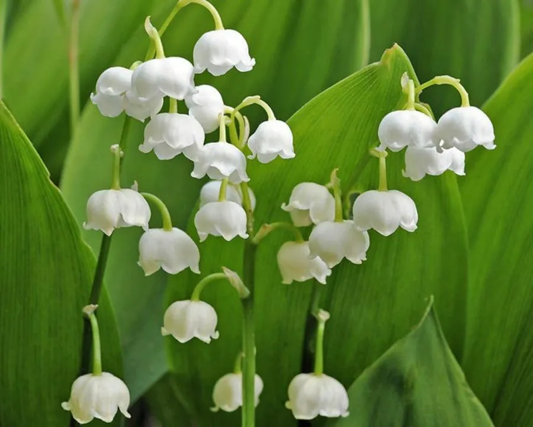

花卉与草本 · 植物界
铃兰 Convallaria majalis

天门冬科多年生草本，春季开白色钟状小花，花序下垂、香气清雅，全株有毒，是著名的林下观赏植物。
- 分类
- 门被子植物门纲木兰纲目天门冬目科天门冬科属铃兰属
- 栖息环境
- 林下阴湿处与溪边，喜凉爽半阴
- 地理分布
- 欧洲、亚洲北部及北美；中国东北、华北、西北山地
- 保护级别
- 暂无评估；中国未列入国家重点保护野生植物名录
物种志
铃兰为天门冬科铃兰属多年生草本，株高 15–30 厘米，地下具横走的根状茎。叶片 2 枚，椭圆形至卵状披针形，基生，具长柄，叶脉平行。花葶自叶丛抽出，总状花序偏向一侧，着花 6–10 朵，花冠钟状，白色，下垂，香气清雅，花期 4–5 月；果实为浆果，球形，成熟时红色，果期 8–9 月。
铃兰原产欧洲、亚洲北部及北美，中国东北、华北、西北山地有分布，生于林下阴湿处。它喜凉爽湿润、半阴的环境，耐寒性强，适宜疏松肥沃、排水良好的土壤。花序下垂、香气清雅，是著名的林下观赏植物，也常作切花；全株含铃兰毒苷，有毒，误食可致心律失常，栽培与观赏时应避免儿童与宠物接触。
形态与习性
- 株高15–30 厘米，根状茎横走
- 花期4–5 月，花白色钟状
- 果期8–9 月，浆果红色
- 光照喜半阴，忌强光暴晒
- 水分喜湿润，忌积水
- 土壤疏松肥沃、排水良好的土壤
- 主要用途林下观赏、切花与地被
趣味知识
- 铃兰的花序偏向一侧，花朵像一串白色小铃铛。
- 它的香气清雅，是香水工业中常用的香调。
- 铃兰全株有毒，误食可致心律失常，观赏时不要采食。
- 铃兰是芬兰的国花，也是欧洲婚礼常用的手捧花。